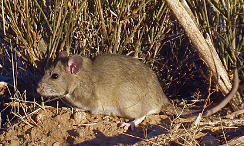

|
Baiomys taylori |
northern pygmy mouse |
Yes, apparently southeastern Arizona counts as ‘northern’ for this genus. One of two competitors for title of ‘smallest Portal rodent,’ B. taylori is currently an infrequent but welcome visitor to the site. As it is primarily a grassland species, individuals caught on the site rarely stay for long. Interestingly, the roughly 8-gram B. taylori is often found in association with cotton rats (Sigmodon), which can weight in excess of 100 grams. |
 |
Chaetodipus baileyi |
Bailey’s pocket mouse |
Bailey’s pocket mouse made its first appearance on the site in the mid-1990s. It is essentially a giant version of its congeneric relative, the desert pocket mouse (C. penicillatus). While close in size to Merriam’s and Ord’s kangaroo rats, it is an inferior competitor and, therefore, is found almost solely on kangaroo rat exclosure plots. |
 |
Chaetodipus hispidus |
hispid pocket mouse |
The hispid pocket mouse looks like a cactus mouse in pocket mouse form; it’s the size of C. baileyi with a beautiful lateral orange stripe. C. hispidus has historically been the least frequently recorded species at the site. In the past few months, however, we’ve caught one or two each trapping period. Nevertheless, it remains a very transient speices; each individual caught this year has been caught once and then never seen again. |
 |
Chaetodipus intermedius |
rock pocket mouse |
C. intermedius is another pocket mouse, though very rarely found at the site as it prefers rockier habitats; it is very similar to C. penicillatus except in habitat preference. |
 |
Chaetodipus penicillatus |
desert pocket mouse |
Although C. penicillatus had been found at the site since the beginning of the study, it didn’t become such an important player in the system until the 2000s. Now, this small pocket mouse is one of the main seasonal drivers of total rodent abundance at the site. The population explodes in the summers with known individuals, new adults, and brand new babies alike; they are ubiquitous across the site, regardless of plot type. In the winters, C. penicillatus enters a type of torpor (not quite hibernation), creating a large seasonal fluctuation in abundance. |
 |
Dipodomys merriami |
Merriam’s kangaroo rat |
Kangaroo rats, with their giant hind feet and namesake bipedal movement, are some of the most beloved species at the site. Of the three species in the Dipodomys genus, D. merriami is currently the most abundant and, presumably, dominant in the system. |
 |
Dipodomys ordii |
Ord’s kangaroo rat |
Ord’s kangaroo rat is nearly indistinguishable from Merriam’s kangaroo rat except for a tiny fifth toe on its hind feet that the Merriams lack. D. ordii can be thought of as D. merriami’s kid brother who’s always aspiring to be like his brother but can’t quite keep up; a grass-loving species, D. ordii is often just trailing D. merriami in abundance. |
 |
Dipodomys spectabilis |
banner-tailed kangaroo rat |
The largest of the three kangaroo rats at the site, D. spectabilis (fondly referred to as ‘spectabs’ by those in the know) is known for its striking tail. It has by far the largest feet on the site at a whopping 48 mm average and often weighs in at over 100 grams, nearly twice the size of the other kangaroo rats. Spectabs were once running the show at Portal. As the site became shrubbier, however, the reign of D. spectabilis came to a slow end in the 1990’s. Since then, a few individuals have popped up here and there but haven’t stuck around, often heading for grassier pastures. |
|  |
Neotoma albigula |
white-throated woodrat |
Along with being by far the largest rodent species at the site (my, what big teeth you have…), Neotoma albigula also has a big reputation—roughly 200 grams worth. Woodrats are quite different ecologically from the rest of the species at the site. Unlike the majority of our rodents which are granivorous, N. albigula is primarily a foliovore. (The resident woodrat in our ramada, however, seems to eat just about anything.) Woodrats—also commonly known as packrats—build middens, or large nests, out of sticks and any ‘interesting’ debris they can get their paws on. While their numbers at the site aren’t prolific, research assistants know exactly which kangaroo rat exclosure plots this species tends to inhabit and secretly wish they’d brought leather gloves with them. |
 |
Onychomys leucogaster |
northern grasshopper/scorpion mouse |
Amongst smammal enthusiasts such as ourselves, the carnivorous grasshopper mice (Onychomys genus) are legendary. Their name(s) and this video basically say it all. In addition to eating insects and scorpions, they have been known to eat venomous centipedes and even other mice. Both species also have a distinctive high-pitched ‘howl’ when defending their territory. Mighty though they are, both species, and O. leucogaster in particular, have hilariously short tails. For unknown reasons, the northern grasshopper mouse is less common at the site than the southern. |
 |
Onychomys torridus |
southern grasshopper/scorpion mouse |
Aside from overall range, the southern species differs little from the northern (O. leucogaster) except for a slightly longer tail and somewhat more elongated appearance. This species is more abundant at the site and can be found in all plot types. |
 |
Perognathus flavus |
silky pocket mouse |
Perognathus flavus rivals only Baiomys taylorii for the title of smallest rodent at our site, weighing between 5 and 10 grams. Tiny, beautiful, and immensely soft, this aptly named silky pocket mouse is a favorite of previous and current research assistants alike. Its relatively low abundance and recent rarity makes it an especially exciting catch. |
 |
Peromyscus eremicus |
cactus mouse |
Often having a bold lateral orange stripe, the cactus mouse is one of the most colorful and striking mice at Portal. It is also the most commonly found Peromyscus species at the site, usually found in kangaroo rat exclosures and incidentally in the full removal plots. Unlike the white-footed mouse and deer mouse, however, it is mainly restricted to the deserts in the American Southwest and northern Mexico. |
 |
Peromyscus leucopus |
white-footed mouse |
This Peromyscus species, while very common throughout the majority of the United States, is not all that common at Portal. Peromyscus are good climbers and, therefore, frequently end up in the full rodent exclosure plots. |
 |
Peromyscus maniculatus |
deer mouse |
Like P. leucopus, P. maniculatus is nearly ubiquitous throughout the continental United States but is not a particularly common resident at the site. The desert variants of these two species are challenging to distinguish between, adding a fun challenge to trapping. |
 |
Reithrodontomys fulvescens |
fulvous harvest mouse |
The fulvous harvest mouse is an infrequent visitor to the site. It is the largest—and the rarest—harvest mouse species found at the site. Like many of the Reithrodontomys caught at the site, it is most often found in kangaroo rat exclosures and full rodent removals. |
 |
Reithrodontomys megalotis |
western harvest mouse |
R. megalotis is the most common harvest mouse found at Portal. Harvest mice abundance tends to remain fairly low throughout the site, though there is sometimes an increase in the winter when the desert pocket mice (C. penicillatus) are in torpor. |
 |
Reithrodontomys montanus |
plains harvest mouse |
While very similar to R. megalotis, R. montanus is notably smaller than the other harvest mice at the site. It is less commonly found at the site than R. megalotis but plays a similar role ecologically. |
 |
Sigmodon fulviventer |
tawny-bellied cotton rat |
A favorite of many Portal research assistants, rodents in the Sigmodon genus are best described as ‘squishy like cotton.’ Okay, so maybe that’s not the most descriptive identifier, but their size and coloration make them an easily identifiable genus. S. fulviventer is one of the two more frequently seen cotton rat species at the site. It is distinguishable by the yellow (rather than white) fur on its belly, as indicated by its descriptive common name. |
 |
Sigmodon hispidus |
white-bellied cotton rat |
S. hispidus, with a white rather than a tawny belly, is the other cotton rat species that somewhat frequently has been caught at the site. The Sigmodons seem to come through the site in waves; some years are boom years while others are bust years. What is driving these population cycles? How do Sigmodons move through the regional landscape? We don’t know but sure would like to find out. |
 |
Sigmodon ochorognathus |
yellow-nosed cotton rat |
S. ochorognathus almost seems like an urban (erm…rural) legend nowadays. A few individuals were caught in the 1990s, but none have been seen since. |